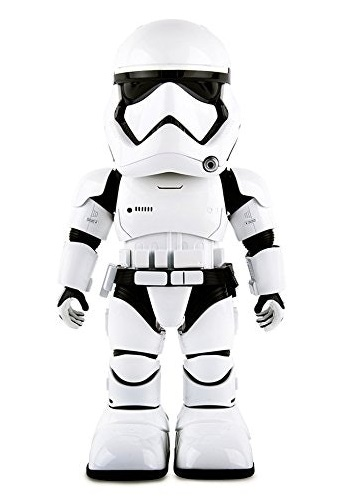

Stormtrooper
Whethere you're a Star Wars fan or not, we bet you would enjoy having this little Stormtrooper to call your own.
Your Stormtrooper by UBtech can be controlled with voice commands, patrol your home without walking into walls,
and recognize faces you’ve deemed to be allies or foes. See how much damage this 11-inch tall fighter can do.
Visit UBTECH website here
or
buy it on amazon while it's still available for under 100 Euros
Lynx
Lynx has the same capabilities of the Amazon Alexa, meaning this robot can give you weather forecasts, play your music,
and make to-do lists. If you really want, Lynx can also teach you yoga and show you dance moves,
that is if you really want to take advice on dancing from a robot.
The robot also has security features: it records can capture a 30-second video if it detects movement when you’re not
home, and send the footage to your smartphone app.
Find Lynx here